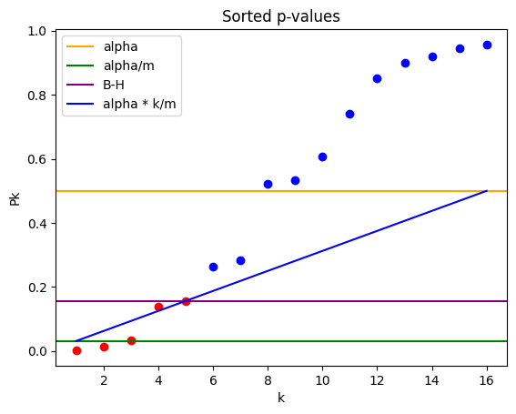
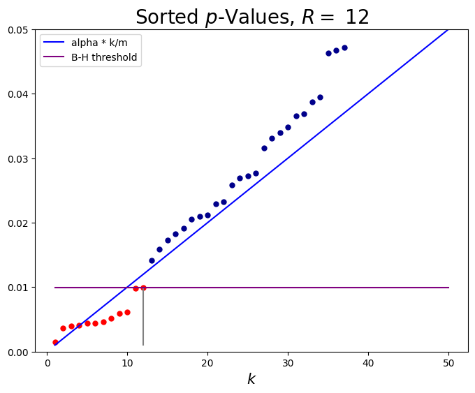

import matplotlib.pyplot as plt
import numpy as np
from scipy.stats import uniform
from scipy import stats
def plot_p_values(m,alpha):
uniform_distribution = uniform(loc=1, scale=m-1)
x = np.linspace(uniform_distribution.ppf(0), uniform_distribution.ppf(1), m)
cdf = uniform_distribution.cdf(x)
#plt.plot(x, cdf, 'k-', lw=2,label='cdf under null')
data = uniform.rvs(loc=0, scale=1, size=m, random_state=12)
filtered = filter(lambda x: x[1] <= alpha*(x[0]+1)/m, enumerate(np.sort(data)))
filtered = list(filtered)
R = max(filtered)[0] + 1 if filtered else 0
plt.plot([i for i in range(1, R+1)], np.sort(data)[0:R], 'o', color='red')
plt.plot([i for i in range(R+1,m+1)], np.sort(data)[R:], 'o', color='blue')
plt.axhline(y=alpha, color='orange', linestyle='-', label="alpha")
plt.axhline(y=alpha/m, color='green', linestyle='-', label="alpha/m")
plt.axhline(y=np.sort(data)[R-1], color='purple', linestyle='-', label="B-H")
x = np.linspace(1,m,11)
plt.plot(x, (alpha/m)*x,'b', label='alpha * k/m')
plt.legend(loc='upper left'); plt.ylabel("Pk");plt.xlabel("k");
plt.title("Sorted p-values")
def bh():
alpha = 0.05
m = 50
k = np.arange(1, m+1)
bh_line = alpha * k/m
np.random.seed(seed=233401)
pvals = np.sort(stats.beta.rvs(size=50, a=3, b=15))**2
plt.figure(figsize=(8, 6))
plt.plot(k, bh_line, color='b', label='alpha * k/m')
r = np.max(np.where(pvals - alpha*k/m <= 0))
plt.scatter(np.arange(1, r+2), pvals[0:r+1], color='red', s=25)
plt.scatter(np.arange(r+2, m+1), pvals[r+1:m+1], color='darkblue', s=25)
cutoff = pvals[r]
plt.plot([r+1, r+1], [alpha/m, cutoff], color='grey')
plt.plot([1, m], [cutoff, cutoff], color='purple', label='B-H threshold')
plt.xlabel('$k$', size=15)
plt.ylim(0, alpha)
plt.legend()
plt.title('Sorted $p$-Values, $R =$ '+str(r+1), size=20)
print('alpha =', alpha, ' m =', m);
11. Data 188 Spring 2024#
12. Week 12 Seminar Notes#
12.1. A. Adhikari#
with Kate Gwimm, Vincent He (Fall 2022)
13. Multiple Comparisons#
13.1. Introduction#
Last time, we explored the question: Given numerical data in \(G\) groupswith sample size \(n_{g}\) in Group \(g\), is there a difference in distribution between the groups?
In the one-way ANOVA model, the null hypothesis was that all the underlying group means are equal:
This is sometimes called the global null hypothesis to distinguish it from hypotheses that say only that some pair or subset of the means are equal.
13.2. Bonferroni Correction Method#
Last time we developed an \(F\)-test for \(H_0\) under some normality and independence assumptions. Another approach would be to instead do \({G \choose 2}\) comparisons, or tests: $\( \begin{align*} H_0^1: ~& \mu_{1} = \mu_{2}\\ H_0^2: ~& \mu_{1} = \mu_{3}\\ ~& \dots \\ H_0^{G \choose 2}: ~& \mu_{G-1} = \mu_{G} \end{align*} \)$
We call \(H^{*}_{0}\) the “global null” because \(H^{*}_{0}\) is the same as “all the \(H^{i}_{0}\)’s are true”.
The next natural question is, if we run each test at a \(5\%\) level (resulting in \({G \choose 2}\) \(p\) values), then what is our overall error rate?
13.2.1. False Discoveries#
If a test concludes the alternative when in fact the null is true, we have a false discovery.
Thus the level of the test \(i\) is the chance that the test makes a false discovery:
We have \(\binom{G}{2}\) tests. We will denote \({G \choose 2}\) by \(m\).
Tukey defined the familywise error rate \(FWER\) as the chance of at least one false discovery.
Assuming the global null is true, so all of our \(H^{i}_{0}\)’s are also true, and the level of each test is \(\alpha\), the familywise error rate is
Because our tests are all based on the same samples, they are not independent. So in general,
However, we do have a bound on \(FWER\) by Boole’s (or Bonferroni’s) inequality. Since all \(m\) tests have level \(\alpha\),
The probability we want to control is the overall error rate \(FWER\) on the LHS. The \(m\) in our upper bound is the number of tests and is fixed. We can, however, control the level of each test. Instead of starting with level \(\alpha\) for each test of \({H}^{*}_0\), if we had started with level \(\frac{\alpha}{m}\) for each test, we could control \(FWER\).
This is the Bonferroni Method: Start with a level of \(\frac{\alpha}{m}\) for all \(m\) tests. Then the chance that there is at least one false discovery under the global null is at most \(\alpha\).
The pros of this method are that it’s easy to do and requires no assumptions about our model. The con is that when \(m\) is very big, \(\frac{\alpha}{m}\) is very small. Having a small cutoff for our p-values means that our rejection region is small, so the power of each test will be small. The tests will be extremely conservative.
13.2.2. How bad is Bonferroni’s bound?#
So how conservative is each test? Let’s explore the closeness of the upper bound.
Suppose we set the level of each test to \(\frac{\alpha}{m}\) and our tests are independent. Then
Let’s find an exponential approximation to this chance. We know that for small \(x\), \(\log(1+x) \sim x\). So
and hence $\(FWER ~ = ~ 1 - (1 - \frac{\alpha}{m})^m \sim 1-e^{-\alpha}\)$
Now \(e^{-x} = 1 - x + \frac{x^{2}}{2!}-\dots \sim 1 - x \; \text{for small x}\). So
We have shown that if we use the Bonferroni method and the tests are independent, then the chance of at least 1 false discovery is very close to \(\alpha\). In other words, while the power of our test will still be low, we can’t do much better than Bonferroni if our goal is to control \(FWER\) alone.
13.3. Benjamini–Hochberg Procedure#
In some contexts, such as bioinformatics, the number of tests \(m\) is sometimes huge. The Bonferroni method might lead to no discoveries at all. What if we were prepared to accept some number of false discoveries? Benjamini and Hochberg provided a procedure that is a compromise between performing each test and level \(\alpha\) and performing it at level \(\alpha/m\).
Today we will just describe the procedure. In the next session we will look at exactly what it is controlling.
Assume we perform \(m\) tests using the Bonferroni method, so each test has level \(\frac{\alpha}{m}\). Let \(P_1, P_2, \dots , P_m\) be the p-values. For example, for test \(k\), we will reject \(H^{k}_{0}\) if \( P_k < \frac{\alpha}{m}\). Remember that each \(P_k\) is a random variable: it depends on the sample.
The global null is that all \(m\) null hypotheses \(H^{i}_{0}, 1 \leq i \leq m\) are true. Thus we reject the global null when at least one of the p-values is less than \(\frac{\alpha}{m}\) This is equivalent to rejecting the global null when the minimum p-value is less than \(\frac{\alpha}{m}\).
We’ve seen that this is \(\frac{\alpha}{m}\) is extremely conservative.
If we didn’t use the Bonferroni method and instead used a level \(\alpha\) for every test, we’d have a lot more discoveries. However the more discoveries we have, the more likely we are to have more false discoveries as well.
There must be a cutoff between \(\alpha\) and \(\frac{\alpha}{m}\) that is better! The figure below will help us see what is happening.
The points are the sorted p-values \(P_{(k)}\) plotted against \(k\).
The gold line is at vertical level \(\alpha\). The green line is at vertical level \(\alpha/m\). Using the gold threshold corresponds to performing each test at level \(\alpha\). With this threshold we reject 7 hypotheses, that is, we have 7 discoveries.
The green threshold corresponds to performing each test at level \(\alpha/m\). With this threshold we have 3 discoveries.
Idea (Benjamini-Hochberg): At \(k=1\), go up to the green line, that is, start at the point \((1, \alpha/m)\). At \(k=m\), go up to the gold line, that is, the point \((m, \alpha)\). Join the two dots with a blue line. Find the highest \(k\) such that the corresponding p-value is at or below the blue line. That p-value becomes the new threshold, shown as the purple line.
That is, for all p-values at or below this threshold, we will reject their respective null hypotheses. The 5 points corresponding to those p-values are shown in red and correspond to the discoveries made by the Benjamini-Hochberg process. For all p-values strictly above this threshold, shown in blue, we will stick with their respective null hypotheses.
# Red dots correspond to p-values of the rejected hypotheses
plot_p_values(m=16,alpha=0.5)

Formally, the Benjamini-Hochberg process proposes that we reject all the hypotheses \(H^{1}_0, H^{2}_0, \dots, H^{k}_0\) such that \(k\) is the largest number for which \(P_{(k)} < \alpha \cdot \frac{k}{m}\).
13.3.1. Setup and Notation#
We are testing \(m\) null hypotheses \(H_0^1, H_0^2, \ldots, H_0^m\).
Let the corresponding p-values be \(P_1, P_2, \ldots, P_m\) with order statistics \(P_{(1)}, P_{(2)}, \ldots, P_{(m)}\).
Let \(R\) be the number of discoveries, that is, the number of rejected null hypotheses. Let \(V\) be the number of true null hypotheses that are rejected, that is, the number of false discoveries.
The false discovery proportion \(FDP\) is defined by $\( FDP = \begin{cases} \displaystyle{\frac{V}{R}} & \text{if } R > 0 \\ 0 & \text{if } R = 0 \end{cases} \)\( This is more compactly written as \)\( FDP = \frac{V}{\max(R, 1)} \)$
The \(FDP\) is a ratio of random counts. Benjamini and Hochberg defined its expectation to be the false discovery rate \(FDR\):
The Benjamini-Hochberg (B-H) procedure controls the \(FDR\) to be at most \(\alpha\), as we will show below. Before we do that, recall a situation in which you would want to consider B-H. Suppose you are testing a large number of null hypotheses, only a few of which are true – and you really want to discover which ones are true. Then you might want to use B-H to have a higher chance of making the discoveries than you’d have if you were using the Bonferroni method, even though you would make more false discoveries along the way.
13.3.2. B-H Procedure#
As described in the last seminar, the process is:
Find the largest \(k\) for which \(P_{(k)} \le \displaystyle{\frac{\alpha k}{m}}\). Call that index \(k^*\).
Reject all the null hypotheses corresponding to \(P_{(1)}, P_{(2)}, \ldots, P_{(k^*)}\).
Accept all the other null hypotheses.
Thus \(k^*\) discoveries are made. In our new notation, \(k^* = R\).
The figure below is a version of the one from last week and shows how the procedure works. The red points correspond to the discoveries, that is, the rejected null hypotheses.
bh()
alpha = 0.05 m = 50

The question now is how many of the rejected null hypotheses are actually false, or, by complementation, how many of the rejections are false rejections.
The \(FDP\) is the proportion of red points that are false rejections. This is a random proportion: both its numerator and denominator are random. By definition, the \(FDR\) is the expectation of the random proportion of false discoveries.
13.3.3. Proof of \(FDR\) Control#
The Benjamini-Hochberg procedure controls the \(FDR\) to be at most \(\alpha\).
We will prove this result in the case where the p-values are independent and continuous so they have no ties. More general proofs are provided in advanced classes including Stat 210A.
For some \(m_0 \le m\) suppose \(m_0\) of the null hypotheses are true. Let \(\mathcal{H_0} = \{i: H_0^i \text{ is true}\}\) be the set of indices of the true null hypotheses. Then \(\mathcal{H_0}\) has \(m_0\) elements.
For \(1 \le i \le m\) let \(V_i = I(H_0^i \text{ is rejected})\). Then we can write the \(FDP\) as
So $\( FDR ~ = ~ \sum_{i \in \mathcal{H}_0} E \left( \frac{V_i}{\max(R, 1)} \right) \)$
Suppose we are able to show that for each \(i \in \mathcal{H}_0\),
Then we’ll be done because the bound will imply
So let’s fix \(i \in \mathcal{H}_0\). We have
because the condition for rejection is \(P_i \le \displaystyle{\frac{\alpha k^*}{m}} = \displaystyle{\frac{\alpha R}{m}}\).
If the denominator were a constant, we could pull it out of the expectation. The idea is to condition in such a way that it does become a constant we can pull out.
Take another look at the red points in the figure above. If you drop one of them to \(0\), it’s still below the threshold \(\displaystyle{\frac{\alpha R}{m}}\), and the number of rejections is still \(R\) though the threshold for rejection might have changed.
This is just what we need. To simplify notation, let \(\mathbf{P}\) be the sequence \(P_1, P_2, \ldots, P_m\) and let \(R\) be denoted \(R(\mathbf{P})\) to remind us that \(R\) is a function of the p-values.
For our fixed \(i \in \mathcal{H}_0\), consider the new set of p-values \(\mathbf{P}_{i, 0}\) which is the sequence \(\mathbf{P}\) but with \(P_i\) replaced by \(0\). Let \(R(\mathbf{P}_{i, 0})\) be the number of rejections based on this new sequence.
Condition on \(\mathbf{P}_{i,0}\): $\( \begin{align*} E \left(\frac{V_i}{\max(R, 1)} \right) ~ &= ~ E \left( \frac{I(P_i \le \alpha R/m)}{\max(R, 1)} \right) \\ &= ~ E \left( E \left( \frac{I(P_i \le \alpha R/m)}{\max(R, 1)} \mid \mathbf{P}_{i, 0} \right)\right)\\ \end{align*} \)$
If we can show that the inner conditional expectation \(E \left( \displaystyle{ \frac{I(P_i \le \alpha R/m)}{\max(R, 1)} } \mid \mathbf{P}_{i, 0} \right)\) is at most \(\displaystyle{\frac{\alpha}{m}}\), we’ll be done.
As we noticed above, on the event \(\{P_i \le \alpha R/m\}\), that is, when \(H_0^i\) is rejected, we have \(R(\mathbf{P}) > 0\) and \(R = R(\mathbf{P}) = R(\mathbf{P}_{i, 0})\).
So the inner expectation is $\( \begin{align*} E \left( \frac{I(P_i \le \alpha R/m)}{\max(R, 1)} \mid \mathbf{P}_{i, 0} \right) ~ &= ~ \frac{1}{R}\cdot E(I(P_i \le \alpha R/m) \mid \mathbf{P}_{i,0}) \\ &= ~ \frac{1}{R} \cdot P(P_i \le \alpha R/m) \end{align*} \)$
Keep in mind that we have assumed the p-values are independent of each other. So replacing \(P_i\) by \(0\) doesn’t change the distribution of the other p-values, and \(P_i\) is independent of \(\mathbf{P}_{i,0}\).
Since \(i \in \mathcal{H}_0\), the distribution of \(P_i\) is uniform \((0, 1)\), and
as claimed.
Note: In the discrete setting the p-value is a discrete random variable with \(P(P_i \le \alpha R/m) \le \frac{\alpha R}{m}\). So the equalities above become upper bounds.